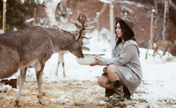
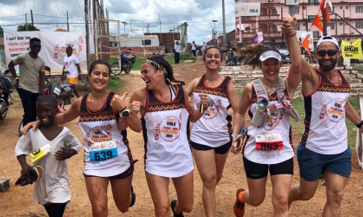
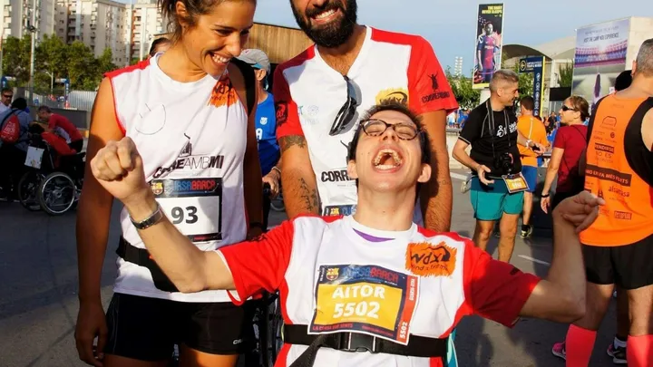
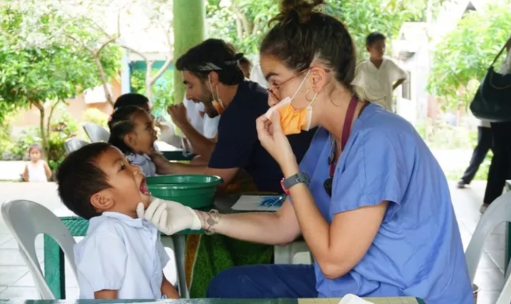

Sección 1 - Categorías
- Recaudación de fondos Política
- Recaudación de fondos para Salud
- Recaudación de fondos para organizaciones sin fines de lucro
- Recaudación de fondos para Escuelas
- Recaudación de fondos de Caridad
Sección 2 - Conoce a Nuestros Captadores:
Nuestros captadores nunca solicitan claves ni códigos de seguridad de tarjetas de débito o de tarjetas de crédito.
Sección 3 - Historias con Éxito
Historia 1: Santuario para los animales
Paola hizo de los animales su prioridad. Por eso decidió crear una campaña en GoFundMe para construir un centro de rescate para animales salvajes donde pudieran vivir dignamente y en un entorno virgen rodeado de bosques y praderas. Alcanzó más de setenta y dos mil euro y fundó la Reserva Wild Forest.
Historia 2: Maratón Solidario en Sierra Leona
Street Child empezó a trabajar en Sierra Leona en 2008 con un número reducido de niños y niñas de la calle. Desde entonces han ayudado a más de 100.000 niños a volver a la escuela. La carrera no es el fin sino el medio.El objetivo es recaudar fondos para ayudar a los niños afectados por el ébola así como a sus familias.
Historia 3: Camino de Santiago sobre Ruedas
La historia de éxito que se propuso recaudar dinero para hacer posible que personas con movilidad reducida hiciesen el Camino de Santiago y que consiguió recaudar más de 7.000€ en 5 meses.
Historia 4: Jóvenes dentistas creando sonrisas en Filipinas
Enseñar a los niños y responsables de la fundación la importancia de la prevención de la salud dental y darles así herramientas para que ellos mismos sean capaces de aplicarlo en el entorno donde viven. Una campaña que se propuso recaudar 3.500€ y ya ha llegado a los 4.121€.
Sección 4 - Apoyo de empresas